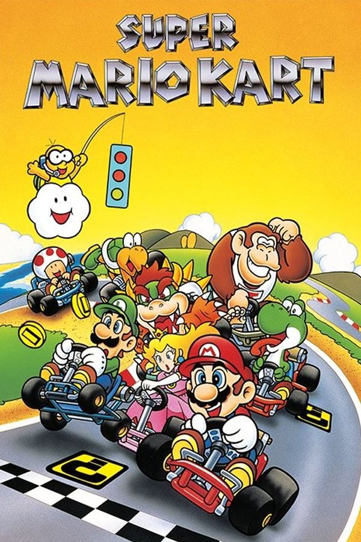

Super Mario Kart
Super Mario Kart
Details
|  | |
| Playtime | Not Played |
| Last Activity | Never |
| Added | 4/29/2025 6:52:10 |
| Modified | 4/29/2025 23:30:22 |
| Completion Status | Not Played |
| Library | Playnite |
| Source | |
| Platform | Nintendo SNES |
| Release Date | 8/27/1992 |
| Community Score | |
| Critic Score | 94 |
| User Score | |
| Genre | Kart racing |
| Developer | Nintendo EAD |
| Publisher | Nintendo |
| Feature | Multiplayer Single Player |
| Links | Wikipedia Official website MobyGames |
| Tag | [People] artist: Mie Yoshimura [People] artist: Yōichi Kotabe [People] artist: Yoshiaki Koizumi [People] composer: Soyo Oka [People] director: Hideki Konno [People] director: Tadashi Sugiyama [People] producer: Shigeru Miyamoto [People] programmer: Masato Kimura |
Description
Super Mario Kart is a 1992 kart racing game developed and published by Nintendo for the Super Nintendo Entertainment System (SNES). The first game in the Mario Kart series, it was released in Japan and North America in 1992, and in Europe the following year in 1993. Selling 8.76 million copies worldwide, the game went on to become the fourth best-selling SNES game of all time. Super Mario Kart was re-released on the Wii's Virtual Console in 2009, on the Wii U's Virtual Console in 2013, and on the New Nintendo 3DS's Virtual Console in 2016. Nintendo re-released Super Mario Kart in 2017 as part of the company's Super NES Classic Edition.
In Super Mario Kart, the player takes control of one of eight Mario series characters, each with differing capabilities. In single player mode players can race against computer-controlled characters in 4 multi-race cups consisting of 20 tracks (5 in each cup) over three difficulty levels (50cc, 100cc and 150cc). During the races, offensive and speed boosting power-ups can be used to gain an advantage. Alternatively players can race against the clock in a Time Trial mode. In multiplayer mode two players can simultaneously take part in the cups or can race against each other one-on-one in Match Race mode. In a third multiplayer mode – Battle Mode – the aim is to defeat the other players by attacking them with power-ups, destroying balloons which surround each kart.
Super Mario Kart received positive reviews and was praised for its presentation, innovation and use of Mode 7 graphics. It has been ranked among the greatest video games of all time by several magazines and organizations. It is often credited with creating the kart-racing subgenre of video games, leading other developers to try to duplicate its success. The game is seen as having been key to expanding the Mario series into non-platforming games; this diversity has led to it becoming the best-selling game franchise of all time. Several sequels to Super Mario Kart have been released, for consoles, handhelds and in arcades, each enjoying critical and commercial success. While some elements have developed throughout the series, the core experience from Super Mario Kart has remained intact.
Gameplay
Super Mario Kart is a kart racing game featuring several single and multiplayer modes. During the game, players take control of one of eight Mario franchise characters, each with differing capabilities, and drive karts around tracks with a Mario franchise theme. In order for them to begin driving, Lakitu appears with a traffic light hanging on his fishing pole at the starting line, which starts the countdown. When the light turns green, the race or battle begins. During a race, the player's viewpoint is from behind their kart. The goal of the game is to either finish a race ahead of other racers, who are controlled by the computer and other players, or complete a circuit in the fastest time. There is a battle mode in which the aim is to attack the karts of the other human players.
Some tracks feature chevron-shaped boost panels to increase speed for a brief moment. In addition, there are also short ramps that racers can use to launch themselves in the air. A combination of the two makes the player jump higher at a high speed.
Boxes marked with question marks are arrayed on the race tracks; they give special abilities (power-ups) to a player's kart if the vehicle passes over them. Certain power-ups, such as the ability to throw shells and bananas, allow racers to hit other racers with objects, causing them to spin and lose control. A kart that obtains the star power-up is temporarily invincible. Computer players have specific special powers associated with each character that they are able to use throughout the race. Lines of coins are found on the tracks in competitive race modes. By running over these coins, a kart collects them to increase its top speed. Having coins helps players when their kart is hit by another: instead of spinning and losing control, they lose a coin. Coins are lost when karts are struck by power-ups or fall off the tracks.
The game features advanced maneuvers such as power sliding and hopping. Power sliding allows a kart to maintain its speed while turning, although executing the maneuver for too long causes the kart to spin. Hopping helps a kart execute tighter turns: the kart makes a short hop and turns in the air, speeding off in the new direction when it lands. Reviewers praised Super Mario Kart's gameplay, describing the battle mode as "addictive" and the single player gameplay as "incredible". IGN stated that the gameplay mechanics defined the genre.
Modes
Super Mario Kart has two single-player modes: Mario Kart GP (which stands for Grand Prix) and Time Trial. In Mario Kart GP, one player is required to race against seven computer-controlled characters in a series of five races which are called cups. Initially, there are three cups available – the Mushroom Cup, Flower Cup, and Star Cup – at two difficulty levels, 50cc and 100cc. By winning all three of the cups at the 100cc level, a fourth cup – the Special Cup – is unlocked. Winning all four cups at 100cc unlocks a new difficulty level, 150cc. Each cup consists of five five-lap races, each taking place on a distinct track. In order to continue through a cup, a position of fourth or higher must be achieved in each race. If a player finishes in the fifth to eighth position, they are "ranked out" and the race must be replayed – at the cost of one of a limited number of lives – until a placing of fourth or above is achieved. If the player has no lives when they rank out, the game is over. Points are accrued by finishing in the top four positions in a race; first to fourth place receive nine, six, three and one points. If a player finishes in the same position three times in a row, then an extra life is awarded. The finishing order for that race will then become the starting grid for the next race; for example, if a player finishes in first place, then that player will start the next race in the same position. The racer with the highest number of points after all five races have been completed wins the cup. In time trial mode, players race against the clock through the same tracks that are present in Mario Kart GP mode, attempting to set the fastest time possible.
Super Mario Kart has three multiplayer modes; Mario Kart GP, Match Race, and Battle Mode. The multiplayer modes support two players and the second player uses the bottom half of the screen which is used as a map in the single-player modes. Mario Kart GP is the same as in single-player, the only difference being that there are two human-controlled and six computer-controlled drivers. Match Race involves the two players going head to head on a track of their choice without any opponents. In Battle Mode, the two players again go head to head, but this time in one of four dedicated Battle Mode courses. Each player starts with three balloons around their kart which can be popped by power-ups fired by the other player. The first player to have all three of their balloons popped loses.
Super Mario Kart features eight playable characters from the Mario series – Mario, Luigi, Princess Peach, Yoshi, Bowser, Donkey Kong Jr., Koopa Troopa and Toad. Each character's kart has different capabilities with differing levels of top speed, acceleration and handling. During races, computer-controlled characters have special items, or superpowers, which they are able to use. These powers are specific to each character; for example, Yoshi drops eggs which cause players who hit them to lose coins and spin, while Donkey Kong Jr. throws bananas.
The characters are rendered as sprites portrayed from sixteen different angles. In 2005, Nintendojo called the sprites "not-so-pretty" when they are rendered at a distance, and IGN has commented on the dated look of the game. Super Mario Kart was the first game to feature playable characters from the Mario series other than Mario or Luigi in a non-platforming game and the selection and different attributes of the characters is regarded as one of the game's strengths, IGN describing a well-balanced "all-star cast". All of the characters present in Super Mario Kart have gone on to appear in later games in the series, except for Donkey Kong Jr. and Koopa Troopa, who have only appeared intermittently after being replaced by Donkey Kong and Wario respectively in Mario Kart 64.
The tracks in Super Mario Kart are based on locations in Super Mario World such as Donut Plains. Each of the four cups contains five different tracks for a total of twenty unique tracks, additionally there are four unique Battle Mode courses. The course outlines are marked out by impassable barriers and feature a variety of bends ranging from sharp hairpins to wide curves which players can power slide around. Numerous obstacles themed from the Mario series appear, such as Thwomps in the Bowser's Castle tracks, the Cheep-Cheeps from Super Mario World in Koopa Beach and pipe barriers which are found in the Mario Circuit tracks. Other features include off-road sections which slow down the karts such as the mud bogs in the Choco Island tracks. Each cup track is littered with coins and power-up tiles, as well as turbo tiles which give the karts a boost of speed and jumps which launch the karts into the air.
The tracks have received positive commentary, with GameSpy describing them as wonderfully designed and IGN calling them perfect. When naming its top five Mario Kart tracks of all time in 2008, 1UP.com named Battle Mode Course 4 at number three and Rainbow Road – along with its subsequent versions in the series – at number one. The track themes in Super Mario Kart influenced later games in the series; recurring themes that first appeared in Super Mario Kart include haunted tracks, Bowser's Castle and Rainbow Road. Some of the tracks from Super Mario Kart have been duplicated in later games. All twenty of the original tracks are unlockable as an extra feature in the Game Boy Advance title Mario Kart: Super Circuit. Remakes of Mario Circuit 1, Donut Plains 1, Koopa Beach 2 and Choco Island 2 appear as part of the Retro Grand Prix series in Mario Kart DS, remakes of Ghost Valley 2, Mario Circuit 3, and Battle Course 4 appear as part of the Retro Grand Prix and battles in Mario Kart Wii, remakes of Mario Circuit 2 and Rainbow Road appear as part of the Retro Grand Prix in Mario Kart 7, a remake of Donut Plains 3 appears as part of the Retro Grand Prix and battles in Mario Kart 8, a second remake of Rainbow Road appears in Mario Kart 8's first downloadable content pack, a remake of Battle Course 1 appears as a Retro Battle Course in Mario Kart 8 Deluxe, and remakes of Mario Circuit 3 and Bowser Castle 3 appear in the second and sixth waves respectively of Mario Kart 8 Deluxe's Booster Course Pass.
Development
Super Mario Kart was produced by Mario creator Shigeru Miyamoto and directed by Tadashi Sugiyama and Hideki Konno. The development team set out to produce a racing game capable of displaying two players on the same game screen simultaneously, in contrast to the single-player gameplay F-Zero. This led to simpler tracks than those of F-Zero. Computer and Video Games suggest that this initial emphasis on creating a two player experience is the reason for the game's horizontal split-screen during single-player. Battle Mode was developed from the desire to create a one-on-one mode where victory was not determined simply by competing for rank. Masato Kimura, who worked on F-Zero, served as the lead programmer for Super Mario Kart.
The game did not start out as a Mario series game and the first prototype featured a generic kart racer character; the team decided that characters three heads tall would best suit the design of the karts. They did not decide to incorporate Mario characters until a few months into development. The choice was made after the development team observed how one kart looked to another driving past it, decided to see what it would look like with Mario in the kart. Thinking that having Mario in the kart looked better than previous designs, the idea of a Mario themed racing game was born.
Notable in the development of Super Mario Kart was its use of Mode 7 graphics. First seen in F-Zero, Mode 7 is a form of texture mapping available on the SNES which allows a plane to be rotated and scaled freely, achieving a pseudo-three-dimensional appearance. 1UP.com have credited the use of Mode 7 with giving the game graphics which at the time of release were considered to be "breathtaking". Retrospective reflection on the Mode 7 visuals was mixed, with IGN stating that the once revolutionary technology now looks "crude and flickery". Super Mario Kart featured a DSP (Digital Signal Processor) chip; DSPs were used in SNES games as they provided a better handling of floating point calculations to assist with three-dimensional maths. The DSP-1 chip that was used in Super Mario Kart went on to be the most popular DSP chip to be used in SNES games. The music for the game was created by composer Soyo Oka, who previously composed games for Nintendo such as Pilotwings and Ice Hockey.
Reception
Super Mario Kart received critical acclaim and proved to be a commercial success; it received a Player's Choice release after selling one million copies and went on to sell 8.76 million copies worldwide, becoming the fourth best-selling game ever for the SNES. In Japan, it was the top-selling game in September 1992 and became a multi-million seller in 1992, eventually selling a total of 3.82 million in Japan. In Europe, it was the top-selling game during the first quarter of 1993, above the Sega Mega Drive titles Sonic the Hedgehog 2 and Streets of Rage 2 during the same period. In the United Kingdom, Super Mario Kart was the top-selling Super NES game in February 1993, and it went on to be the seventh best-selling game of 1993 with more than 250,000 sales in the country.
Aggregate scoring sites GameRankings and MobyGames both give an average of more than 90 percent. Critics praised the game's Mode 7 graphics. Another aspect of the game to have been praised is its gameplay, which Thunderbolt has described as the "deepest [and] most addictive... to be found on the SNES console". Retrospective reviews of the game have been positive with perfect scores given by review sites including Thunderbolt and HonestGamers. The use of the style and characters from the Mario franchise was also praised as well as the individual characteristics of each racer. Mean Machines described the game as having "struck gold" in a way that no other – not even its sequels – has matched and GameSpot named the game as one of the greatest games of all time for its innovation, gameplay and visual style. Entertainment Weekly wrote that although the game might appear to be a "cynical attempt by Nintendo to cash in on its Super Mario franchise" the review concluded that "plunking the familiar characters down in souped-up go-carts actually makes for a delightful racing game." GamePro said the game "does an excellent job of capturing the thrill of Go-cart racing, and wraps it up in the familiar, fun, Mario-land atmosphere." The reviewer also praised the use of Mode 7 and challenging CPU-controlled opponents.
Super Mario Kart has been listed among the best games ever made several times. In 1995, Total! rated the game 16th on its "Top 100 SNES Games." In 1996, Next Generation listed it as number 37 on their "Top 100 Games of All Time", commenting that the controls are elegantly designed to offer "supreme fun". In 1996, GamesMaster ranked the game 16th on their "Top 100 Games of All Time". In 1999, Next Generation listed Super Mario Kart as number 7 on their "Top 50 Games of All Time", commenting that, "Imitated a thousand times, but never, ever, equalled, Mario Kart changed the rules for the driving game and gave the world one of the most engrossing and addictive two-player experiences ever". Electronic Gaming Monthly ranked it as the 15th best console video game of all time, attributing its higher ranking than Mario Kart 64 (which came in 49th) to its superior track design and powerups. IGN ranked it as the 15th best game ever in 2005, describing it as "the original karting masterpiece" and as the 23rd best game ever in 2007, discussing its originality at time of release. The Age placed it at number 19 on their list of the 50 best games in 2005 and in 2007 Edge ranked Super Mario Kart at number 14 on a list of their 100 best games, noting its continued influence on video game design. The game is included in Yahoo! Games UK's list of the hundred greatest games of all time which praises the appealing characters and power ups and 1UP.com's "Essential 50", a list of the fifty most important games ever made. The game placed 13th in Official Nintendo Magazine's 100 greatest Nintendo games of all time. Guinness World Records ranked it at number 1 on a list of the top 50 console games of all time based on initial impact and lasting legacy. Game Informer ranked the game at 35 on their top 100 games of all time in 2001 praising how the game's Mode 7 revolutionized racing games. In 2018, Complex listed Super Mario Kart seventh on its "The Best Super Nintendo Games of All Time". In 2019, The Strong National Museum of Play inducted Super Mario Kart to its World Video Game Hall of Fame.
Legacy
Super Mario Kart has been credited with inventing the "kart racing" subgenre of video gaming; after its release, several other developers attempted to duplicate its success. In 1994, less than two years after the release of Super Mario Kart, Sega released Sonic Drift; a kart racing game featuring characters from the Sonic the Hedgehog series. Also in 1994, Ubisoft released Street Racer, a kart racing game for the SNES and Mega Drive/Genesis which included a four player mode not present in Super Mario Kart. Apogee Software released Wacky Wheels for PC and Atari Corporation released Atari Karts for the Atari Jaguar in 1995. Future games that followed in the mould of Super Mario Kart include South Park Rally, Konami Krazy Racers, Diddy Kong Racing, Sonic & Sega All-Stars Racing and several racing games in the Crash Bandicoot series. Response to the karting games released since Super Mario Kart has been mixed, with GameSpot describing them as tending to be bad while 1UP.com notes that countless developers have tried to improve upon the Mario Kart formula without success.
Super Mario Kart is credited as being the first non-platforming game to feature multiple playable characters from the Mario franchise. As well as several sequels Nintendo has released numerous other sporting and non-sporting Mario spin-offs since Super Mario Kart; a trend in part accredited to the commercial and critical success of the game. The Mario characters have appeared in many sports games including those relating to basketball, baseball, golf, tennis, and association football (soccer). Non-sporting franchises using the Mario characters have been created, including the Super Smash Bros. series of fighting games and the Mario Party series of board game-based party games. Mario series characters have made cameos in games from other series such as SSX on Tour and NBA Street V3, both published by EA Sports. The genre-spanning nature of the Mario series that was sparked off by the success of Super Mario Kart has been described as key to the success and longevity of the franchise; keeping people interested despite the infrequency of traditional Mario platforming games. Following this model the Mario series has gone on to become the best selling video game franchise of all time with 193 million units sold as of January 2007, almost 40 million units ahead of second-ranked franchise Pokémon, also by Nintendo.
Super Mario Kart was re-released on the Japanese Virtual Console on June 9, 2009, and later in North America on November 23, 2009. Previously, when naming it as one of the most wanted games for the platform in November 2008, Eurogamer stated that problems emulating the Mode 7 graphics were responsible for its absence.
The game was released for the Wii U Virtual Console in Japan during June 2013, and in Europe on March 27, 2014. In addition, North American users were able to get the game starting from August 6, 2014 to celebrate the 22nd anniversary of the game, which included the new game update of Mario Kart 8 on August 27, 2014.
In 2016, the game was re-released for the New Nintendo 3DS.
Nintendo re-released Super Mario Kart in 2017 as part of the company's Super NES Classic Edition.
Super Mario 3D World has a stage with a look based on the Mario Circuit racetracks from Super Mario Kart. A remixed version of the music can be heard. Super Mario Odyssey has a remix, when racing an RC car around a track in New Donk City in the Metro Kingdom.
Several future Mario Kart games contain re-imaginings of courses from Super Mario Kart. Mario Kart: Super Circuit contains all of them, though they need to be unlocked. Mario Kart DS contains remakes of the Mario Circuit 1, Donut Plains 1, Koopa Beach 2, and Choco Island 2 courses. Mario Kart Wii has remakes of the Ghost Valley 2 and Mario Circuit 3 courses. Mario Kart 7 has remakes of the Mario Circuit 2 and Rainbow Road courses. The most recent entry, Mario Kart 8, has remakes of the Donut Plains 3 and Rainbow Road courses, though the latter is only available as downloadable content in the original release. The enhanced Nintendo Switch port of Mario Kart 8, Mario Kart 8 Deluxe, later added remakes of the Mario Circuit 3 and Bowser Castle 3 courses as downloadable content.
Sequels
Several sequels to Super Mario Kart have been released for successive generations of Nintendo consoles, each receiving commercial success and critical acclaim. While some elements have developed throughout the series, the core experience from Super Mario Kart has remained intact. The first sequel, Mario Kart 64, was released in 1996 for the Nintendo 64 and was the first Mario Kart game to feature fully 3D graphics. Although reviewers including IGN and GameSpot felt that the single-player gameplay was lacking compared to its predecessor, the simultaneous four-person multiplayer modes – a first for the Nintendo 64 – were praised. The second sequel, Mario Kart: Super Circuit, was released for the Game Boy Advance in 2001. It was described by GameSpot as more of a remake of Super Mario Kart than a sequel to Mario Kart 64 and featured a return to the graphical style of the original. As well as featuring new tracks, players are able to unlock the original SNES tracks if certain achievements are completed. Mario Kart: Double Dash was released for the GameCube in 2003. Unlike any other Mario Kart game before or since, it features two riders in each kart, allowing for a new form of cooperative multiplayer where one player controls the kart's movement and the other fires weapons. Mario Kart DS, released for the Nintendo DS in 2005, was the first Mario Kart game to include online play via the Nintendo Wi-Fi Connection. It went on to become the best selling handheld racing game of all time, selling 7.83 million units. The game marks the debut of tracks appearing in previous games. Mario Kart Wii was released for the Wii in 2008 and incorporates motion controls and 12-player racing. Like Mario Kart DS, it includes online play; it allows racers to play as user-created Miis (after unlocking the Mii character) as well as Mario series characters and comes packaged with the Wii Wheel peripheral, which can act as the game's primary control mechanism when coupled with a Wii Remote. Mario Kart Wii went on to be the worldwide best-selling game of 2008. Mario Kart 7 for the Nintendo 3DS was released in 2011, which features racing on land, sea, and air. Mario Kart 7 added the ability to customize the kart and to race in first-person mode. Three Mario Kart arcade games have been released, Mario Kart Arcade GP in 2005, Mario Kart Arcade GP 2 in 2007, and Mario Kart Arcade GP DX in 2013. All of them were developed jointly by Nintendo and Namco and feature Namco characters including Pac-Man and Blinky. The most recent entry in the series is Mario Kart 8 for the Wii U, which was released at the end of May 2014, which brings back gliders and propellers from Mario Kart 7 as well as 12-player racing in Mario Kart Wii. Mario Kart 8 includes a new feature called Mario Kart TV, where players can watch highlights of previous races and uploading them to YouTube. Another new feature is anti-gravity racing, where players can race on walls and ceilings. An enhanced port, Mario Kart 8 Deluxe, was released on the Nintendo Switch on April 28, 2017. The game keeps most elements from the Wii U version, while adding more characters, kart parts, battle modes, and battle stages. The port received universal critical acclaim, and has sold over 61 million copies as of March 2024, becoming the best selling game for the console. Furthermore, the number of copies sold exceeded that of Super Mario Bros., released on the Nintendo Entertainment System, making it the first Mario title to outsell a previous instalment.
As the series has progressed, many aspects included in Super Mario Kart have been developed and altered. The power-up boxes which are flat against the track in Super Mario Kart due to the technical limitations of the SNES became floating boxes in later games. The roster of racers has expanded in recent games to include a greater selection of Nintendo characters including some which had not been created at the time of Super Mario Kart's release – such as Petey Piranha from Super Mario Sunshine who appeared in Mario Kart: Double Dash!!. Multiplayer has remained a key feature of the series and has expanded from the two-player modes available in Super Mario Kart: first to allow up to four simultaneous players in split-screen in Mario Kart 64; then leveraging the GameCube's LAN Adapter for up to sixteen players in Mario Kart Double Dash!!; and eventually supporting up to twelve simultaneous online players in Mario Kart Wii. Many of the track themes have been retained throughout the series, including Rainbow Road – the final track of the Special Cup – which has appeared in every Mario Kart console game. Other features present in Super Mario Kart have disappeared from the series. These include the "superpowers" of the computer characters, the feather power-up which allows players to jump high into the air and having a restricted number of lives. The only other Mario Kart games to feature the coin collecting of the original are Mario Kart: Super Circuit, Mario Kart 7, and Mario Kart 8.[citation needed] The aspects of style and gameplay from Super Mario Kart that have been retained throughout the series have led Nintendo to face criticism for a lack of originality but the franchise is still considered to be a beloved household name by many, known for its familiar core gameplay.